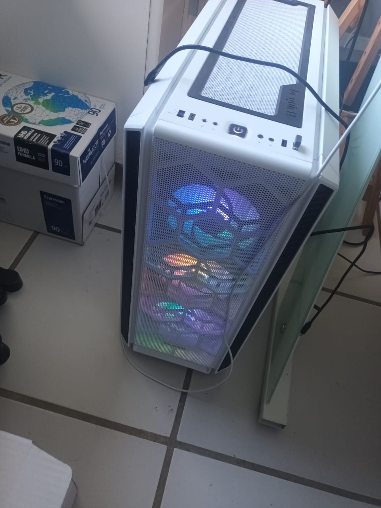
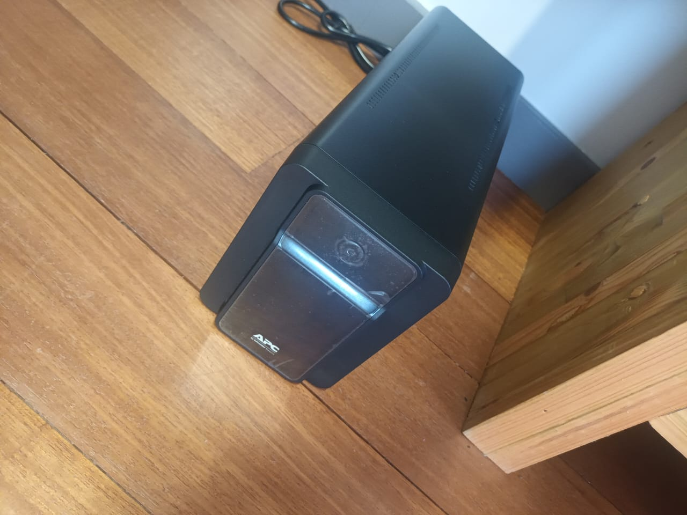

Pour effectuer ma veille technologique, j’utilise « Google Alertes « , qui me crée des alertes toutes les semaines.
Celui-ci me permet d’être toujours au courant de toutes les actualités que je souhaite.
je l'utulise egalement de facon personnelle pour rester a lactu sur differente actualiter
J’ai ajouté à celui-ci, différentes sources telles que : ANSSI, Le Monde Informatique,glpi, linux, windows...
Pour ma veille technologique j'ai choisi La Blockchain
je consulte aussi regulierement les resaux sociaux et site tel que youtube pour les innovation tecnologique
je consulte aussi le site de fandroid

Introduction
LABICHE ERWAN
Passionné par les sciences et les technologies depuis mon plus jeune âge,
mon parcours académique et professionnel reflète une volonté constante d’explorer et de maîtriser les domaines liés à l’informatique et aux systèmes d’information.
Après une seconde générale où j’ai choisi les options Sciences de la Vie et de la Terre (SVT) et Numérique et Sciences Informatiques (NSI).
J’ai rapidement orienté mes études vers le Brevet de Technicien Supérieur en Services Informatiques aux Organisations (BTS SIO),
au sain de l'AMEP.
Au cours de la première année j'ai pris le choix de porter une "double casquette" en optant pour la spécialité Solutions d’Infrastructure, Systèmes et Réseaux (SISR).
Ce choix s’est avéré être une étape déterminante dans mon développement personnel et professionnel.
Grâce à cette formation, j’ai acquis des compétences techniques solides en administration des systèmes et des réseaux,
en cybersécurité, et en gestion des infrastructures informatiques.
Parallèlement, j’ai développé des qualités essentielles telles que la rigueur, la résolution de problèmes complexes et la capacité à travailler en équipe.
Parcours
Tableau de compétences
Accéder au tableau complet👨 Acompagnement professionnel 💻
🎓 1ère Année : Fondamentaux réseaux
📶 Mission Wi-Fi (Sep-Oct 2023)
- ✔ Analyse des normes 802.11
- ✔ Implantation de bornes en entreprise
- ✔ Rédaction de documentation technique
📧 Messagerie Professionnelle (Oct-Nov 2023)
- ✔ Comparatif SMTP/IMAP/POP3
- ✔ Configuration Exchange Server
- ✔ Sécurisation des flux mail
💾 Solutions de Stockage (Dec-Jan 2024)
- ✔ Architecture NAS/SAN
- ✔ Virtualisation FreeNAS
- ✔ Plan de sauvegarde
🚀 2ème Année : Expertise avancée
🖥️ 🖥️Mission 1-2 virtualisation et mise en oeuvre des serveurs + haute disponibilité (Sep-Oct 2024)
- ✔ haute disponibilité AD/DHCP
- ✔ Réplication VMs + sauvegardes
- ✔ Virtualisation Hyper-V
🌐 Comutation et routagé (Oct-Dec 2024)
- ✔ routage Inter-VLAN + Spanning Tree
- ✔ ACL + tunnel GRE
- ✔ Documentation via Packet Tracer
🛰️ Déploiement dhcp relais (Fev-Avril 2025)
- ✔ Mise en place d'etendue
- Comunication Inter-VLAN
🔒 Parcours SISR et Cybersécurité en BTS
🛡️ protocole et optimisation
- IVP4/IPV6
- simulation
- routages dinamique
- redonance
- spanning tree
- protocoles
- agregation de liens
- Lan acces
- haute dysponibilité
- tunnel de GTE
- ACL
- pare-feu
- Cisco, Fortinet , Stormshield
Sensibilisation et mise en place de methodes
- Formation phishing et methode de Hacking (brute force , ddos ...)
- Campagne de sensibilisation RGPD
- Certficat SSL et AD/ADCS
🎯 Projet phare : Infrastructure optimiser et sécurisé
- ✔ Intégration avec Active Directory
- ✔ Réservation d'adresses sécurisées
- ✔ Documentation complète
📜 Mes Certifications
En BTS SIO SISR, j'ai travailler sur plusieurs certifs importantes pour valider mes compétences pro. Voici ce que j'ai pu obtenir :

Certification PIX
Pourquoi ? Obligatoire pour valider le BTS
Ce que j'ai appris :
- 🔍 Recherche info avancée
- 📧 Com' pro en ligne
- 🔐 Sécurité des données
+ : Valable à vie, reconnue par l'État
Voir le référentiel →
SecNumedu
Formation : 1 journée intensive
Points clés :
- 🛡️ Protection contre les attaques
- 📝 Conformité RGPD
- 💡 Culture sécurité
+ : Un gros plus pour le CV dans la cybersécurité
Site ANSSI →
OpenClassroom
Durée : 30h en ligne
Acquis techniques :
- 🕵️♂️ Analyse de logs
- 🌐 Sécurité réseau
- 🔑 Principes cryptographiques
Projet : Mise en place d'un SIEM basique
Voir le programme →
Cisco CyberOps
Durée : 30h en ligne
Acquis techniques :
- 🕵️♂️ Analyse de logs
- 🌐 Sécurité réseau
- 🔑 Principes cryptographiques
Projet : Mise en place d'un SIEM basique
Voir le programme →Cybersecurity Fundamentals
Durée : 40h en ligne
Points forts :
- Fortinet
- 🛡️ Ethical Hacking basics
- 🛡️ Securisation Cloud
- 🔍 Analyse de vulnérabilités
- 🚨 Réponse aux incidents
Projet : Audit de sécurité d'une app web
Voir le cours →Veille Informatique
Stage
Fédération des Églises Adventiste de la Martinique: Accueil
J'ai effecture mon stage de premier année à la féderation adventise de la Martinique (FEAM).
la (FEAM) est le coeur d'un resaux qui relis a peut pres 72 eglise Adventiste en martique.
.jpg)
j'ai pu opprofondire m'as connaissance sur l'infrastructur et la mise en place de solution et d'outils au sain de leur reseaux
Tel que la mise en place de Nas et d'application develloper par eux memes,
se stage ma permis d'obtenir des connaissance plus approfondie en se qui concerner les reseaux d'entreprise
j'ai pue contribuer aux aides en réparent des pc, assisté aux clablages
et au dévellopement de leurs pressences en ligne en leur produisant des flyers.
et la mise en œuvre de matériels et logiciels, maintenance, dépannage, accès Internet, formation, sécurisation et récupération de vos données en Martinique.
ATOUKLIC propose un catalogue complet d'ordinateurs HP et LENOVO, fixes et portables, des imprimantes,
des consommables et accessoires, des composants réseaux et les logiciels nécessaires au bon fonctionnement de vos équipements (Microsoft Windows, Microsoft Office, Antivirus BitDefender, les suites EBP, ...)
Installation et Configuration des Réseaux
.jpg)
L'installation et la configuration de réseaux sont des compétences clés que j'ai développées au cours de mes études et de mes expériences professionnelles. J'ai travaillé sur des projets variés, allant de la mise en place de petits réseaux domestiques à des infrastructures complexes pour des entreprises et particuliers.
.jpg)
.jpg)
.jpg)
EAP245 Point d'accès WiFi bi-bande AC1750 PoE Gigabit
.jpg)
- Débit WiFi bi-bande simultanée de 450 Mbps en 2.4 GHz et de 1300 Mbps en 5 GHz pouvant atteindre une bande passante totale de 1750 Mbps
- Conçu pour les fortes densités de clients. Idéal pour les entreprises ayant besoin d'un réseau Wifi fiable 24h/24.
- Le contrôleur logiciel WiFi inclus offre une administration centralisée et simplifiée pour une centaine d'EAP
- Support du Power over Ethernet (802.3at/af) pour une installation facile sans câblages supplémentaires
- Un portail captif fournit une méthode pratique d'authentification des clients WiFi invités
- Band Steering pour basculer automatiquement les appareils bi-bande sur la fréquence 5 GHz pour des connexions plus rapides
- L'équilibre de la charge permet à un grand nombre d'utilisateurs de bénéficier d'un réseau optimal
- Prise en charge du VLAN pour une gestion réseau améliorée
.jpg)
.jpg)
Installation et Configuration de Starlink
.jpg)
J'ai participé à l'installation et à la configuration de systèmes Starlink pour fournir un accès Internet haut débit dans des zones rurales.
Cela inclut l'installation des antennes paraboliques et la configuration des routeurs pour une connectivité optimale.
analyser les meilleur emplacement de l'antenne en respectant des contrainte esthétique et choix de l'offre la plus adapter ou nécessaire au besoin du client
Ces étapes m’ont permis de détecter et de résoudre des problèmes efficacement tout en documentant ce que je faisais pour expliquer les solutions au client.
Maintenance des Systèmes Informatiques
.jpg)
.jpg)
La maintenance des systèmes informatiques est une partie essentielle de mon travail. Cela inclut la surveillance des performances, la résolution des problèmes et la mise à jour des logiciels et du matériel pour assurer un fonctionnement optimal. Exemple : l'outil, Testeur Traceur qui permet de détecter, tracer et localiser les ruptures de connexions de tous types dont fibre optique
 Pour assurer une alimentation électrique stable et sécurisée pour les équipements informatiques critiques. Cela inclut la configuration des paramètres de basculement et la gestion des batteries.
Installation et Configuration de la Vidéosurveillance et d'imprimante
J'ai également travaillé sur l'installation et la configuration de systèmes de vidéosurveillance. Cela inclut la mise en place de caméras, la configuration des enregistreurs numériques et l'intégration des systèmes de surveillance avec les réseaux existants.

📌 Ce que je maîtrise aujourd'hui
🛠️ Hard Skills
- Configuration avancée Cisco
- Gestion Machine Virtuels
- Déploiement LAN
💼 Soft Skills
- développements
- Documentation technique
- Gestion de projet Agile
- mise en place de resource et outils